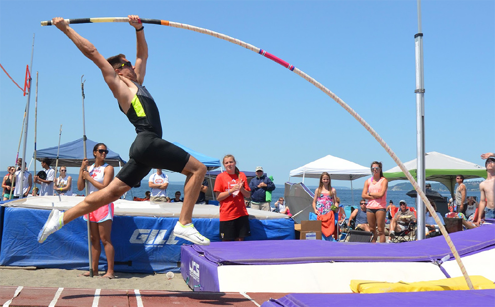

Pole vaulting, also known as pole jumping, is a track and field event in which an athlete uses a long and flexible pole, usually made from fiberglass or carbon fiber, as an aid to jump over a bar. Pole jumping competitions were known to the Mycenaean Greeks, Minoan Greeks and Celts. It has been a full medal event at the Olympic Games since 1896 for men and since 2000 for women.
Poles were used as a practical means of passing over natural obstacles in marshy places such as the province of Friesland in the Netherlands, along the North Sea, and the great level of the Fens in England across Cambridgeshire, Huntingdonshire, Lincolnshire and Norfolk. Artificial draining of these marshes created a network of open drains or canals intersecting each other. To cross these without getting soaked, while avoiding tedious roundabout journeys over bridges, a stack of jumping poles was kept at every house and used for vaulting over the canals.
The earliest recorded pole vaulting competition where height was measured took place at the Ulverston Football and Cricket Club, Lancashire, north of the sands (now Cumbria) in 1843. Competition began in continental Europe around 1850 in Germany, when pole vaulting was added to the exercises of the Turner gymnastic clubs by Johann C. F. GutsMuths and Friedrich L. Jahn.
Click here to learn more about Pole Vaulting!
Here are some of the pole vaulters competing in the Olympics this year!